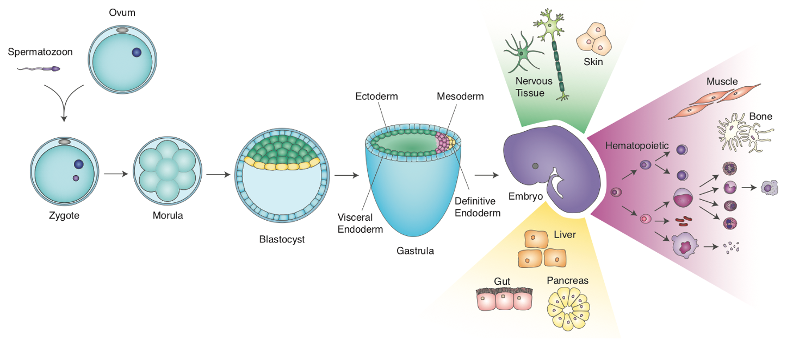
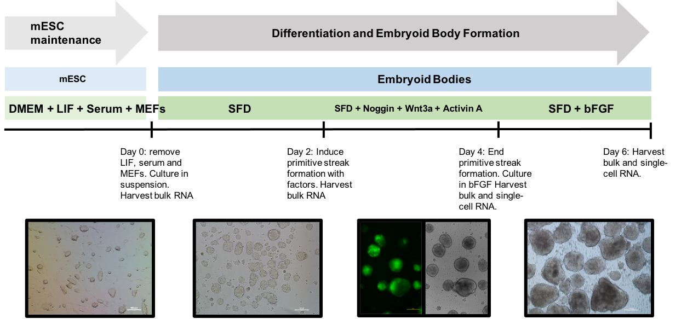
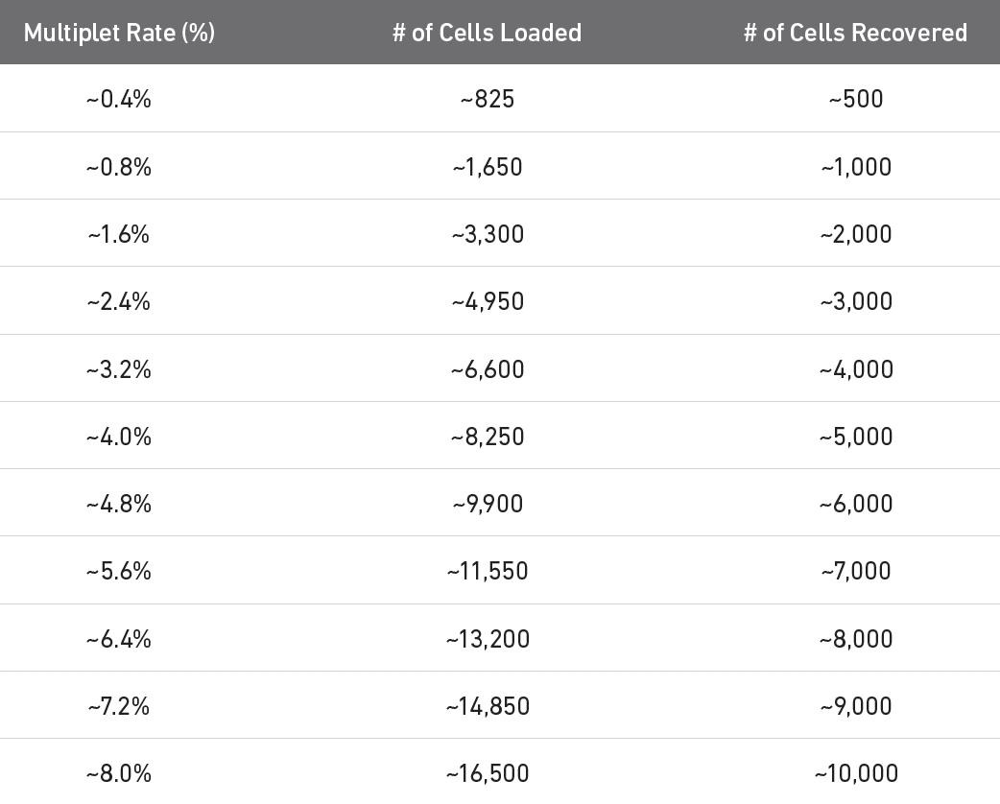
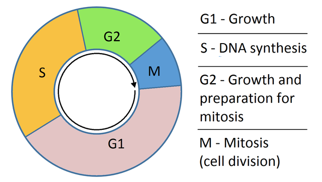
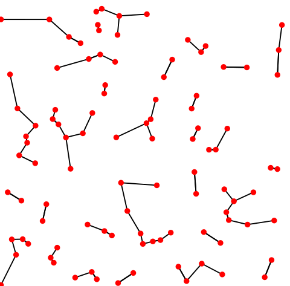

scRNAseq analysis part 2¶
Outline¶
HW2 will be posted by tomorrow morning.
Today, we are going to continue where we left off last Thursday. We will cover the following:
background information on example data
more on quality control
normalization
variable gene selection
principle component analysis
predicting cell cycle status
k-means clustering
hierarchical clustering
kNN
leiden clustering
Background¶
First, let’s start with a bit of background on the data that we have been using. In lecture 1, we talked about gastrulation:

Murine development. Figure credit: Emily KW Lo
When stem cell biologists differentiated pluripotent stem cells, they try to mimic aspects of this process. We have been curious as to the extent that that directed diff achieves this, so back in 2017/8 we turned to scRNAseq to define the cell types that emerge in the early stages of this in vitro process. We used the Embryoid Body method to allow differentiating mESCs to self-organize, along with Wnt/Activin induction of the primitive streak:

Embryoid body protocol. From Spangler et al, Stem Cell Research 2018
Note that the mESC line we used has a reported for T (a.k.a Brachyury), which allows us to monitor primitive streak induction.
At day 4, we sampled cells from this process and subjected them to single cell isolation and cDNA prep via the 10X Genomics Chromium instrument.
So the questions we want to address with this data are:
What cell types are present in these EBs at this stage?
What are the expression signatures of these cell types?
How do they compare to cells of the in vivo embryo? <- will address later
Re-load and initial QC¶
Let’s get the session started, and repeat the data loading, and qc metrics from last week
[ ]:
# If you have not already installed the following package, then please to so
# !pip3 install leidenalg
[2]:
import pandas as pd
import matplotlib.pyplot as plt
import seaborn as sns
import scanpy as sc
import scipy as sp
import numpy as np
import warnings
warnings.filterwarnings('ignore')
sc.settings.set_figure_params(dpi=80)
[ ]:
# adata = sc.read_10x_mtx("/Users/pcahan/Dropbox (Personal)/data/cscb/2022/d4/", var_names='gene_symbols',cache=True, gex_only=True)
# adata.obs['sampleName'] = "mEB_day4"
# adata.var['mt']= adata.var_names.str.startswith(("mt-"))
# adata.var['ribo'] = adata.var_names.str.startswith(("Rps","Rpl"))
# sc.pp.calculate_qc_metrics(adata, qc_vars=['ribo', 'mt'], percent_top=None, log1p=False, inplace=True)
Let’s save this as a h5ad file
[ ]:
# adata.write_h5ad("/Users/pcahan/Dropbox (Personal)/data/cscb/2022/d4/scb_2022_d4_raw.h5ad")
!pwd
[3]:
# adata = sc.read("/Users/patrickcahan/Dropbox (Personal)/data/cscb/2022/d4/cscb_2022_d4_raw.h5ad")
adata = sc.read("/Users/patrickcahan/Dropbox (Personal)/data/cscb/2022/d4/cscb_2022_d4_raw.h5ad")
adata.obs
[3]:
| sampleName | n_genes_by_counts | total_counts | total_counts_ribo | pct_counts_ribo | total_counts_mt | pct_counts_mt | |
|---|---|---|---|---|---|---|---|
| AAACATACCCTACC-1 | mEB_day4 | 1212 | 2238.0 | 629.0 | 28.105453 | 28.0 | 1.251117 |
| AAACATACGTCGTA-1 | mEB_day4 | 1588 | 3831.0 | 1267.0 | 33.072304 | 34.0 | 0.887497 |
| AAACATACTTTCAC-1 | mEB_day4 | 1538 | 3381.0 | 961.0 | 28.423544 | 2.0 | 0.059154 |
| AAACATTGCATTGG-1 | mEB_day4 | 1221 | 2489.0 | 750.0 | 30.132584 | 24.0 | 0.964243 |
| AAACATTGCTTGCC-1 | mEB_day4 | 2661 | 9510.0 | 3132.0 | 32.933754 | 71.0 | 0.746583 |
| ... | ... | ... | ... | ... | ... | ... | ... |
| TTTGACTGAGGCGA-1 | mEB_day4 | 2446 | 6908.0 | 1999.0 | 28.937466 | 65.0 | 0.940938 |
| TTTGACTGCATTGG-1 | mEB_day4 | 2906 | 9558.0 | 3067.0 | 32.088303 | 91.0 | 0.952082 |
| TTTGACTGCTGGAT-1 | mEB_day4 | 1475 | 3280.0 | 1035.0 | 31.554878 | 22.0 | 0.670732 |
| TTTGACTGGTGAGG-1 | mEB_day4 | 2808 | 9123.0 | 2923.0 | 32.039898 | 55.0 | 0.602872 |
| TTTGACTGTACAGC-1 | mEB_day4 | 3518 | 14918.0 | 5091.0 | 34.126560 | 91.0 | 0.610001 |
5405 rows × 7 columns
Cell filtering¶
Recall the doublet problem. 10x has estimated the double rate for their 3’ products:

Multiplet table for 3’ v3.1 (see 10x website).
Let’s filter out cells based on the following: - the top 5% of cells based on total counts to exclude possible doublets - cells with < 500 genes based on n_genes_by_counts and - cells with > 10% pct_counts_mt - cells with < 50% ribosomal counts
[4]:
print("Number of cells: ",adata.n_obs)
# figure out the total counts == 95 percentile
thresh = np.percentile(adata.obs['total_counts'],95)
print("95th percentile: ",thresh)
Number of cells: 5405
95th percentile: 12928.400000000001
[5]:
adata = adata[adata.obs['total_counts'] < thresh, :]
print("Number of cells: ",adata.n_obs)
Number of cells: 5134
[6]:
# filter for % mt
adata = adata[adata.obs['pct_counts_mt'] < 10, :]
print("Number of cells: ",adata.n_obs)
Number of cells: 5133
[7]:
# filter for % ribo > 50%
adata = adata[adata.obs['pct_counts_ribo'] < 50, :]
print("Number of cells: ",adata.n_obs)
Number of cells: 5109
[8]:
sc.pl.scatter(adata, x='total_counts', y='n_genes_by_counts')
Gene filtering¶
We also want to exclude genes that are only detected sporadically. In this case, let’s set this threshold to at least 5 cells:
[9]:
print("Number of genes: ",adata.n_vars)
gThresh = 5
sc.pp.filter_genes(adata, min_cells=gThresh)
print("Number of genes: ",adata.n_vars)
Number of genes: 27998
Trying to set attribute `.var` of view, copying.
Number of genes: 15677
I also advocate excluding genes that are highly expressed but that are not informative. For example, the ribosomal genes, and Malat1. Public service announcement/correction on Ribo genes
[10]:
sc.pl.highest_expr_genes(adata, n_top=50,palette="Blues", width=.3)
[12]:
mito_genes = adata.var_names.str.startswith('mt-')
ribo_genes = adata.var_names.str.startswith(("Rpl","Rps"))
malat_gene = adata.var_names.str.startswith("Malat1")
[13]:
mito_genes
[13]:
array([False, False, False, ..., False, False, False])
[14]:
remove = np.add(mito_genes, ribo_genes)
remove = np.add(remove, malat_gene)
[15]:
np.add([True, True], [False, True])
[15]:
array([ True, True])
[19]:
keep = np.invert(remove)
keep
[19]:
array([ True, True, True, ..., True, True, True])
[17]:
print(len(keep) - np.count_nonzero(keep))
120
[18]:
adata = adata[:,keep].copy()
print("Number of genes: ",adata.n_vars)
Number of genes: 15557
Normalization¶
First, do a a total count normalization such that each barcode/cell ends up with the same total expression. It is also common practice to log the resulting values. BUT, lets keep a copy of the raw counts in a .raw slot:
[21]:
adata.raw = adata
sc.pp.normalize_total(adata, target_sum=1e4)
sc.pp.log1p(adata)
Highly variable genes¶
Common practice to limit some parts of analysis to those variables/genes that exhibit some degree of variation in their values across the data. We call these highly variable genes, or HVG for short. To find these, calculate some gene statistics, which when combined with thresholds below, determine which genes are considered HVG. These metrics are mean expression and dispersion (variance / mean). Variance is defined as the expected squared deviation of gene expression. The normalized dispersion is calculated by scaling based on a bin of mean expression.
[22]:
sc.pp.highly_variable_genes(adata, min_mean=0.0125, max_mean=4, min_disp=0.25)
adata.var
[22]:
| gene_ids | mt | ribo | n_cells_by_counts | mean_counts | pct_dropout_by_counts | total_counts | n_cells | highly_variable | means | dispersions | dispersions_norm | |
|---|---|---|---|---|---|---|---|---|---|---|---|---|
| Xkr4 | ENSMUSG00000051951 | False | False | 37 | 0.007031 | 99.315449 | 38.0 | 36 | False | 0.016160 | 0.963224 | -0.793932 |
| Sox17 | ENSMUSG00000025902 | False | False | 214 | 0.121369 | 96.040703 | 656.0 | 200 | True | 0.245262 | 2.410920 | 5.548414 |
| Mrpl15 | ENSMUSG00000033845 | False | False | 3083 | 1.093617 | 42.960222 | 5911.0 | 2812 | False | 1.177424 | 1.363713 | 0.200615 |
| Lypla1 | ENSMUSG00000025903 | False | False | 1300 | 0.289732 | 75.948196 | 1566.0 | 1177 | False | 0.522485 | 1.201372 | -0.183017 |
| Tcea1 | ENSMUSG00000033813 | False | False | 2025 | 0.507678 | 62.534690 | 2744.0 | 1853 | False | 0.782621 | 1.229463 | -0.082616 |
| ... | ... | ... | ... | ... | ... | ... | ... | ... | ... | ... | ... | ... |
| Vamp7 | ENSMUSG00000051412 | False | False | 810 | 0.168178 | 85.013876 | 909.0 | 729 | True | 0.342715 | 1.299276 | 0.339964 |
| Spry3 | ENSMUSG00000061654 | False | False | 5 | 0.000925 | 99.907493 | 5.0 | 5 | False | 0.002576 | 1.157724 | -0.113710 |
| PISD | ENSMUSG00000095041 | False | False | 2648 | 0.801295 | 51.008326 | 4331.0 | 2480 | True | 1.128138 | 1.547616 | 0.890088 |
| DHRSX | ENSMUSG00000063897 | False | False | 363 | 0.071230 | 93.283996 | 385.0 | 331 | False | 0.147803 | 1.127410 | -0.219726 |
| CAAA01147332.1 | ENSMUSG00000095742 | False | False | 13 | 0.002405 | 99.759482 | 13.0 | 10 | False | 0.006262 | 1.560301 | 1.294218 |
15557 rows × 12 columns
[23]:
sc.pl.highly_variable_genes(adata)
Gene scaling¶
Often, we are more interested in changes in gene expression rather than absolute expression levels, and how these changes in expression contribute to variation in cell state or cell type. To focus on this aspect of expression, we will transform expression values using the z-score, which just adjust the expression of each gene by subtracting the mean, and then dividing by the standard deviation. This is also helpful for the PCA that is performed below.
[24]:
sc.pp.scale(adata, max_value=10)
Principal components analysis¶
There are two facts that make PCA a good tool of analzying scRNAseq data. First, genes are expressed in coordinated fashion, meaning that many have correlated expression patterns. Second scRNAseq data is noisy.
PCA allows us to reduce a high dimensional data set into a lower dimension in which much of the total variation is maintained. To understand PCA, you need to know linear algebra. In essence, it identifies sets of linear combinations of genes in such a way that they uncorrelated and explain most variation in the data. The function call does the following
compute the covariance matrix (correlation between each pair of genes)
finding eigenvectors (directions of axes that maximize that variance), orthogonal to each other
Later, we might want to select npcs = the number of pcs that will be used for downstream clustering.
[25]:
sc.tl.pca(adata, n_comps=100)
sc.pl.pca_variance_ratio(adata,100, )
[26]:
sc.set_figure_params(figsize="10, 4")
sc.pl.pca_variance_ratio(adata,100, )
[27]:
np.shape(adata.obsm["X_pca"])
[27]:
(5109, 100)
[28]:
np.shape(adata.varm["PCs"])
[28]:
(15557, 100)
Now, let’s just take a look at how the data look! Plot the cells based on the PCs.
[29]:
# sc.set_figure_params(figsize="5, 5")
fig, axs = plt.subplots(2,2, figsize=(5,5), constrained_layout=True)
sc.pl.pca_scatter(adata, ax=axs[0,0], show=False, size=10)
sc.pl.pca_scatter(adata, components="1,3", ax=axs[0,1], show=False, size=10)
sc.pl.pca_scatter(adata, components="2,3", ax=axs[1,0], show=False, size=10)
sc.pl.pca_scatter(adata, components="1,4", ax=axs[1,1], show=False, size=10)
[29]:
<AxesSubplot:xlabel='PC1', ylabel='PC4'>
What happens if you don’t use HVG in PCA?
[30]:
sc.tl.pca(adata, n_comps=100, use_highly_variable=False)
sc.set_figure_params(figsize="10, 4")
sc.pl.pca_variance_ratio(adata,100, )
[31]:
fig, axs = plt.subplots(2,2, figsize=(7,5), constrained_layout=True)
sc.pl.pca_scatter(adata, color="Zfp42", ax=axs[0,0], show=False, size=10, use_raw=False)
sc.pl.pca_scatter(adata, color="Zfp42", components="1,3", ax=axs[0,1], show=False, size=10, use_raw=False)
sc.pl.pca_scatter(adata, color="Zfp42", components="2,3", ax=axs[1,0], show=False, size=10, use_raw=False)
sc.pl.pca_scatter(adata, color="Zfp42", components="1,4", ax=axs[1,1], show=False, size=10, use_raw=False)
[31]:
<AxesSubplot:title={'center':'Zfp42'}, xlabel='PC1', ylabel='PC4'>
Let’s go back to use the HVG
[32]:
sc.tl.pca(adata, n_comps=100, use_highly_variable=True)
[33]:
fig, axs = plt.subplots(2,2, figsize=(7,5), constrained_layout=True)
sc.pl.pca_scatter(adata, color="Zfp42", ax=axs[0,0], show=False, size=10, use_raw=False)
sc.pl.pca_scatter(adata, color="Zfp42", components="1,3", ax=axs[0,1], show=False, size=10, use_raw=False)
sc.pl.pca_scatter(adata, color="Zfp42", components="2,3", ax=axs[1,0], show=False, size=10, use_raw=False)
sc.pl.pca_scatter(adata, color="Zfp42", components="1,4", ax=axs[1,1], show=False, size=10, use_raw=False)
[33]:
<AxesSubplot:title={'center':'Zfp42'}, xlabel='PC1', ylabel='PC4'>
Cell cycle status¶
Recall in Lecture 5 when we covered Drop-Seq, how the authors were able to predict phase of cell cycle. What is cell cycle?

Cell cycle. Credit: Wikipedia.
This was done by summarizing the expression of genes associated with distinct phases of cell cycle and normalizing this value to a background value. Let’s perform a similar analysis here. First, please fetch the table of mouse genes:
[ ]:
# !wget https://compstemcellbio.s3.amazonaws.com/2022/resources/mouseCellCycle_050218.csv
[34]:
#cell_cycle_genes = [x.strip() for x in open("/Users/pcahan/Dropbox (Personal)/data/cscb/2022/resources/mouseCellCycle_050218.csv")]
cell_cycle_genes = [x.strip() for x in open("/Users/patrickcahan/Dropbox (Personal)/data/cscb/2022/resources/mouseCellCycle_050218.csv")]
[35]:
print("n cc genes:", len(cell_cycle_genes))
cell_cycle_genes[0:5]
n cc genes: 114
[35]:
['Mcm5', 'Pcna', 'Tyms', 'Fen1', 'Mcm2']
Split into genes associated with S phase, and those associated with G2M
[36]:
s_genes = cell_cycle_genes[:43]
g2m_genes = cell_cycle_genes[43:]
# now intersect these with genes present in the annData object
cell_cycle_genes = [x for x in cell_cycle_genes if x in adata.var_names]
print("n cc genes:", len(cell_cycle_genes))
n cc genes: 111
[37]:
s_genes = [x for x in s_genes if x in adata.var_names]
g2m_genes = [x for x in g2m_genes if x in adata.var_names]
[38]:
sc.tl.score_genes_cell_cycle(adata, s_genes=s_genes, g2m_genes=g2m_genes)
[39]:
adata.obs
[39]:
| sampleName | n_genes_by_counts | total_counts | total_counts_ribo | pct_counts_ribo | total_counts_mt | pct_counts_mt | S_score | G2M_score | phase | |
|---|---|---|---|---|---|---|---|---|---|---|
| AAACATACCCTACC-1 | mEB_day4 | 1212 | 2238.0 | 629.0 | 28.105453 | 28.0 | 1.251117 | -0.025818 | 0.066043 | G2M |
| AAACATACGTCGTA-1 | mEB_day4 | 1588 | 3831.0 | 1267.0 | 33.072304 | 34.0 | 0.887497 | 0.193831 | 0.545027 | G2M |
| AAACATACTTTCAC-1 | mEB_day4 | 1538 | 3381.0 | 961.0 | 28.423544 | 2.0 | 0.059154 | 0.453981 | 0.562032 | G2M |
| AAACATTGCATTGG-1 | mEB_day4 | 1221 | 2489.0 | 750.0 | 30.132584 | 24.0 | 0.964243 | 0.001577 | 0.840160 | G2M |
| AAACATTGCTTGCC-1 | mEB_day4 | 2661 | 9510.0 | 3132.0 | 32.933754 | 71.0 | 0.746583 | 0.446344 | 0.671123 | G2M |
| ... | ... | ... | ... | ... | ... | ... | ... | ... | ... | ... |
| TTTGACTGACTCTT-1 | mEB_day4 | 2941 | 11419.0 | 4406.0 | 38.584812 | 44.0 | 0.385323 | -0.164811 | 0.345561 | G2M |
| TTTGACTGAGGCGA-1 | mEB_day4 | 2446 | 6908.0 | 1999.0 | 28.937466 | 65.0 | 0.940938 | 0.704966 | 0.669519 | S |
| TTTGACTGCATTGG-1 | mEB_day4 | 2906 | 9558.0 | 3067.0 | 32.088303 | 91.0 | 0.952082 | 1.178114 | 0.898342 | S |
| TTTGACTGCTGGAT-1 | mEB_day4 | 1475 | 3280.0 | 1035.0 | 31.554878 | 22.0 | 0.670732 | 0.246748 | 0.693743 | G2M |
| TTTGACTGGTGAGG-1 | mEB_day4 | 2808 | 9123.0 | 2923.0 | 32.039898 | 55.0 | 0.602872 | -0.162199 | 1.935829 | G2M |
5109 rows × 10 columns
[40]:
adata_cc_genes = adata[:, cell_cycle_genes].copy()
sc.pp.pca(adata_cc_genes,use_highly_variable=False)
[41]:
sc.set_figure_params(figsize="5, 4")
sc.pl.pca_scatter(adata_cc_genes, color=["phase"], components="2,3")
... storing 'phase' as categorical
[42]:
sc.pl.pca_scatter(adata_cc_genes, color=("Mcm5", "Pcna", "Cdk1", "Top2a"), components="2,3", use_raw=False)
[43]:
fig, axs = plt.subplots(2,2, figsize=(7,5), constrained_layout=True)
sc.pl.pca_scatter(adata, color="phase", ax=axs[0,0], show=False, size=10)
sc.pl.pca_scatter(adata, color="phase", components="1,3", ax=axs[0,1], show=False, size=10)
sc.pl.pca_scatter(adata, color="phase", components="2,3", ax=axs[1,0], show=False, size=10)
sc.pl.pca_scatter(adata, color="phase", components="1,4", ax=axs[1,1], show=False, size=10)
... storing 'phase' as categorical
[43]:
<AxesSubplot:title={'center':'phase'}, xlabel='PC1', ylabel='PC4'>
[44]:
fig, axs = plt.subplots(2,2, figsize=(7,5), constrained_layout=True)
sc.pl.pca_scatter(adata, color="total_counts", ax=axs[0,0], show=False, size=10)
sc.pl.pca_scatter(adata, color="total_counts", components="1,3", ax=axs[0,1], show=False, size=10)
sc.pl.pca_scatter(adata, color="total_counts", components="2,3", ax=axs[1,0], show=False, size=10)
sc.pl.pca_scatter(adata, color="total_counts", components="1,4", ax=axs[1,1], show=False, size=10)
[44]:
<AxesSubplot:title={'center':'total_counts'}, xlabel='PC1', ylabel='PC4'>
Clustering¶
Let’s start with one of the simplest clustering methods: k-means. It is an iterative process that starts with k randomly sampled points. It assigns cells to cluster defined by the nearest point. Then, it updates the points as the center of the newly defined cluster, repeating this process unitl convergence or a specified number of times. The key concept here is that of the distance metric, which quantifies how close cells are. Eucliean distance is commonly used, as are different transformations of correlation measures (e.g. 1 - PCC).
[45]:
from sklearn.cluster import KMeans
from sklearn.metrics import adjusted_rand_score
[46]:
kmeans = KMeans(n_clusters=2, random_state=0).fit(adata.obsm["X_pca"])
adata.obs['kmeans2'] = kmeans.labels_.astype(str)
[47]:
fig, axs = plt.subplots(2,2, figsize=(7,5), constrained_layout=True)
sc.pl.pca_scatter(adata, color="kmeans2", ax=axs[0,0], show=False, size=10, use_raw=False, legend_loc="on data")
sc.pl.pca_scatter(adata, color="kmeans2", components="1,3", ax=axs[0,1], show=False, size=10, use_raw=False, legend_loc="on data")
sc.pl.pca_scatter(adata, color="kmeans2", components="2,3", ax=axs[1,0], show=False, size=10, use_raw=False, legend_loc="on data")
sc.pl.pca_scatter(adata, color="kmeans2", components="1,4", ax=axs[1,1], show=False, size=10, use_raw=False, legend_loc="on data")
... storing 'kmeans2' as categorical
[47]:
<AxesSubplot:title={'center':'kmeans2'}, xlabel='PC1', ylabel='PC4'>
[48]:
kmeans = KMeans(n_clusters=10, random_state=0).fit(adata.obsm["X_pca"])
adata.obs['kmeans10'] = kmeans.labels_.astype(str)
fig, axs = plt.subplots(2,2, figsize=(7,5), constrained_layout=True)
sc.pl.pca_scatter(adata, color="kmeans10", ax=axs[0,0], show=False, size=10, use_raw=False, legend_loc="on data")
sc.pl.pca_scatter(adata, color="kmeans10", components="1,3", ax=axs[0,1], show=False, size=10, use_raw=False, legend_loc="on data")
sc.pl.pca_scatter(adata, color="kmeans10", components="2,3", ax=axs[1,0], show=False, size=10, use_raw=False, legend_loc="on data")
sc.pl.pca_scatter(adata, color="kmeans10", components="1,4", ax=axs[1,1], show=False, size=10, use_raw=False, legend_loc="on data")
... storing 'kmeans10' as categorical
[48]:
<AxesSubplot:title={'center':'kmeans10'}, xlabel='PC1', ylabel='PC4'>
[49]:
kmeans = KMeans(n_clusters=5, random_state=0).fit(adata.obsm["X_pca"])
adata.obs['kmeans5'] = kmeans.labels_.astype(str)
[50]:
fig, axs = plt.subplots(2,2, figsize=(7,5), constrained_layout=True)
sc.pl.pca_scatter(adata, color="kmeans5", ax=axs[0,0], show=False, size=10, use_raw=False, legend_loc="on data")
sc.pl.pca_scatter(adata, color="kmeans5", components="1,3", ax=axs[0,1], show=False, size=10, use_raw=False, legend_loc="on data")
sc.pl.pca_scatter(adata, color="kmeans5", components="2,3", ax=axs[1,0], show=False, size=10, use_raw=False, legend_loc="on data")
sc.pl.pca_scatter(adata, color="kmeans5", components="1,4", ax=axs[1,1], show=False, size=10, use_raw=False, legend_loc="on data")
... storing 'kmeans5' as categorical
[50]:
<AxesSubplot:title={'center':'kmeans5'}, xlabel='PC1', ylabel='PC4'>
Now let’s try another simple method: hierarchical clustering. describe this method
[51]:
from sklearn.cluster import AgglomerativeClustering
cluster = AgglomerativeClustering(n_clusters=2, affinity='euclidean', linkage='ward')
adata.obs['hclust_2'] = cluster.fit_predict(adata.obsm["X_pca"]).astype(str)
cluster = AgglomerativeClustering(n_clusters=3, affinity='euclidean', linkage='ward')
adata.obs['hclust_3'] = cluster.fit_predict(adata.obsm["X_pca"]).astype(str)
cluster = AgglomerativeClustering(n_clusters=5, affinity='euclidean', linkage='ward')
adata.obs['hclust_5'] = cluster.fit_predict(adata.obsm["X_pca"]).astype(str)
cluster = AgglomerativeClustering(n_clusters=10, affinity='euclidean', linkage='ward')
adata.obs['hclust_10'] = cluster.fit_predict(adata.obsm["X_pca"]).astype(str)
[52]:
fig, axs = plt.subplots(1,4, figsize=(14,5), constrained_layout=True)
sc.pl.pca_scatter(adata, color="hclust_2", components="1,3",ax=axs[0], show=False, size=10, use_raw=False, legend_loc="on data")
sc.pl.pca_scatter(adata, color="hclust_3", components="1,3",ax=axs[1], show=False, size=10, use_raw=False, legend_loc="on data")
sc.pl.pca_scatter(adata, color="hclust_5", components="1,3",ax=axs[2], show=False, size=10, use_raw=False, legend_loc="on data")
sc.pl.pca_scatter(adata, color="hclust_10", components="1,3",ax=axs[3], show=False, size=10, use_raw=False, legend_loc="on data")
... storing 'hclust_2' as categorical
... storing 'hclust_3' as categorical
... storing 'hclust_5' as categorical
... storing 'hclust_10' as categorical
[52]:
<AxesSubplot:title={'center':'hclust_10'}, xlabel='PC1', ylabel='PC3'>
One final class of clustering methods is based on deriving the k-nearest neighbor graph. Walk them through the concept, explain how used to transform adjacency matrix

K-nearest neighbor graph. Credit: Wikipedia.
Recall the elbow plot. From this, we can pick out a reasonable n_pcs
[53]:
n_pcs = 20
n_neighbors = 15
sc.pp.neighbors(adata, n_neighbors=n_neighbors, n_pcs=n_pcs)
OMP: Info #271: omp_set_nested routine deprecated, please use omp_set_max_active_levels instead.
[54]:
sc.tl.leiden(adata, .25)
[ ]:
fig, axs = plt.subplots(1,3, figsize=(14,5), constrained_layout=True)
sc.pl.pca_scatter(adata, color="kmeans5", components="1,3",ax=axs[0], show=False, size=10, use_raw=False, legend_loc="on data")
sc.pl.pca_scatter(adata, color="hclust_5", components="1,3",ax=axs[1], show=False, size=10, use_raw=False, legend_loc="on data")
sc.pl.pca_scatter(adata, color="leiden", components="1,3",ax=axs[2], show=False, size=10, use_raw=False, legend_loc="on data")
<AxesSubplot:title={'center':'leiden'}, xlabel='PC1', ylabel='PC3'>
We only got to this point in the class. Below are two lines of code that 1.) perform a t-test to identify differentially expressed genes between clusters. It does this in by comparing mean expression of genes in each cluster vs all other clusters. 2.) ranking the genes according to their differential expression per cluster, and producing a dot plot of the top 5 genes per cluster.
[56]:
sc.tl.rank_genes_groups(adata,'leiden', use_raw=False)
sc.pl.rank_genes_groups_dotplot(adata, n_genes=5, groupby='leiden', use_raw=False, dendrogram=False)
WARNING: Default of the method has been changed to 't-test' from 't-test_overestim_var'
[57]:
sc.tl.rank_genes_groups(adata,'kmeans5', use_raw=False)
sc.pl.rank_genes_groups_dotplot(adata, n_genes=5, groupby='kmeans5', use_raw=False, dendrogram=False)
WARNING: Default of the method has been changed to 't-test' from 't-test_overestim_var'